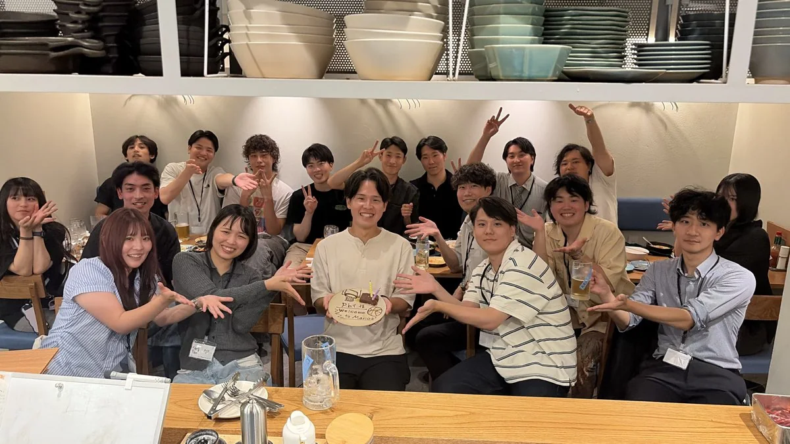
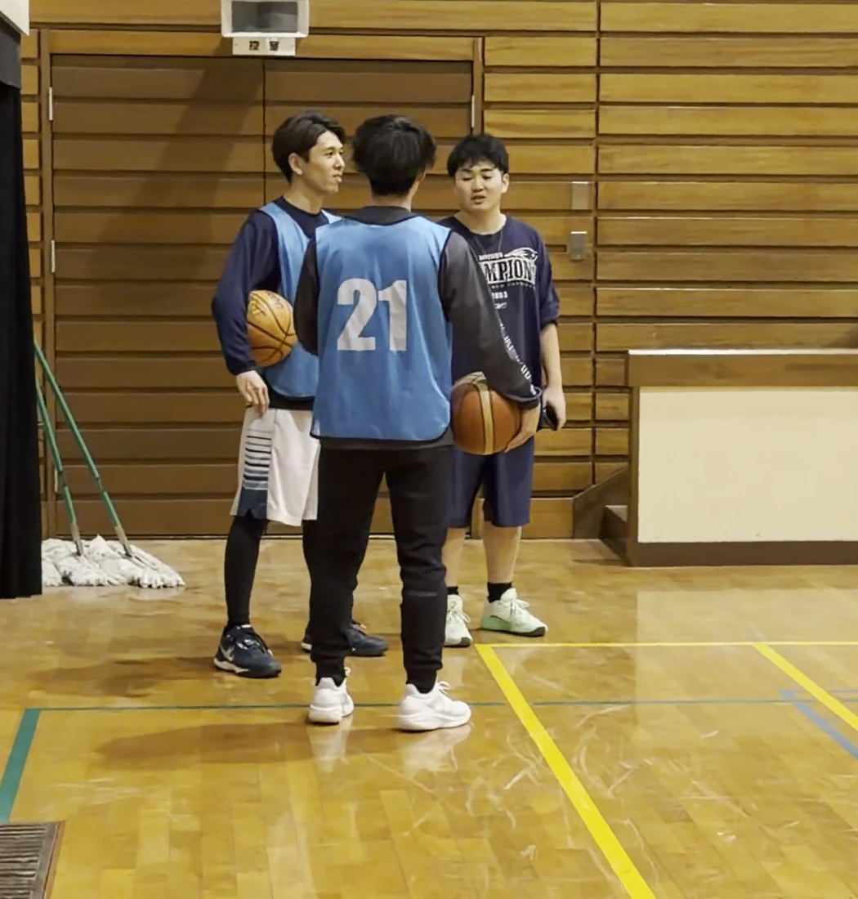
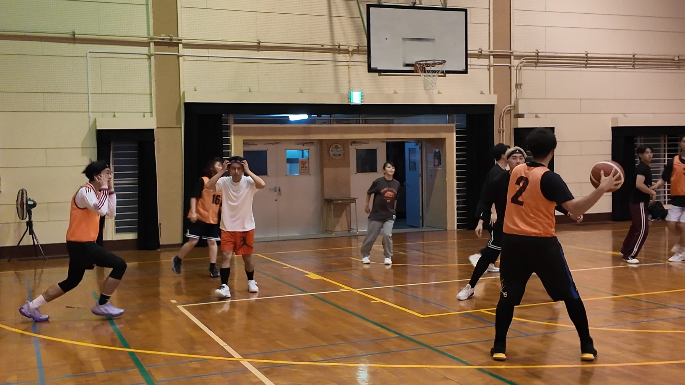

p.b.qで 過ごす、 3つの 時間。
バスケ以外でも、 楽しいと 思える 時間。

「自分の 居場所」と 思える コミュニティへ。

平日の 朝も、 夜も。 バスケの 外でも。
MORNING BASKETBALL
01
平日の 朝から バスケ
活動 バスケットボール ご 案内 日時・ 場所・ 申込 みは 公式LINEへ
NIGHT BASKETBALL
02
平日の 夜にも バスケ
活動 バスケットボール ご 案内 日時・ 場所・ 申込 みは 公式LINEへ

OFF THE GYM
03
p.b.qの 仲間と、 距離を グッと 縮める。
活動 親睦会・ 交流イベント ご 案内 日時・ 場所・ 申込 みは 公式LINEへ
Instagramで 見る、 p.b.q。
よく ある 質問。
Q.どんな 人が 参加できますか？
A.
Q.ブランクが あっても 大丈夫ですか？
A.
Q.一人で 参加しても 大丈夫ですか？
A.
Q.参加費は いくらですか？
A.